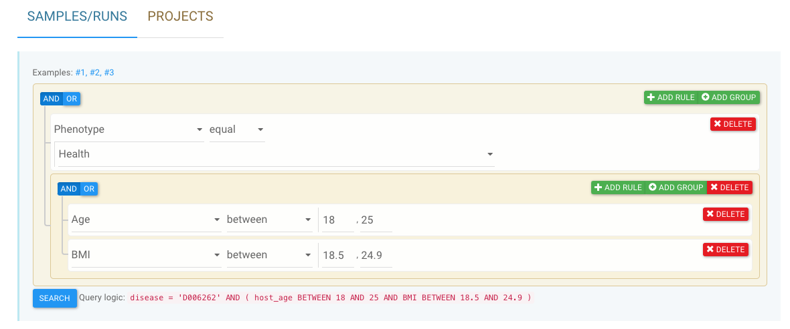
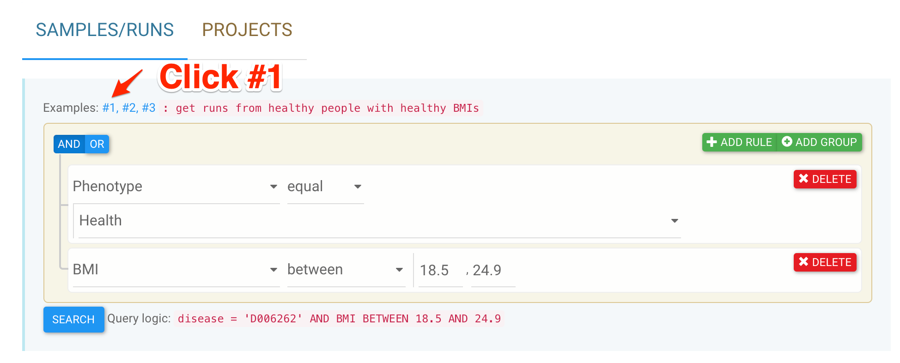
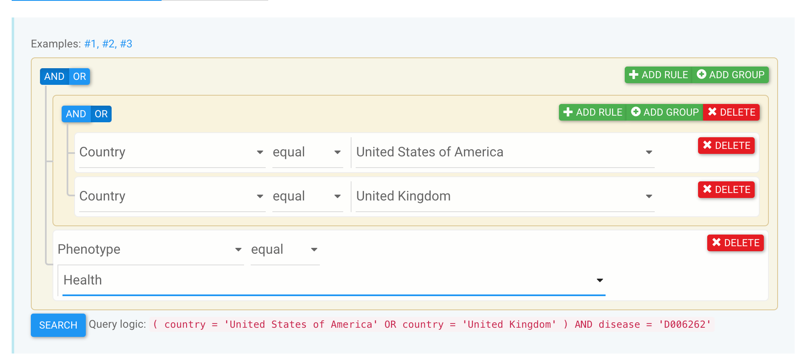
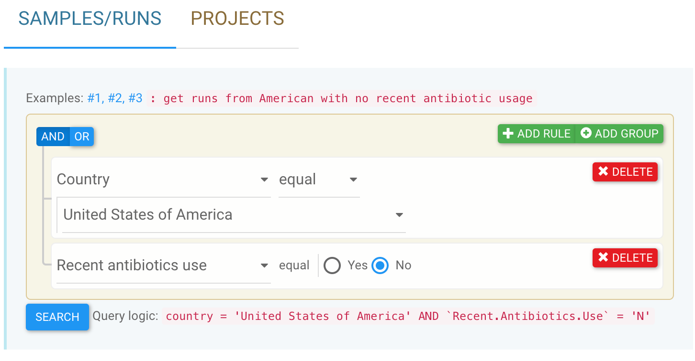
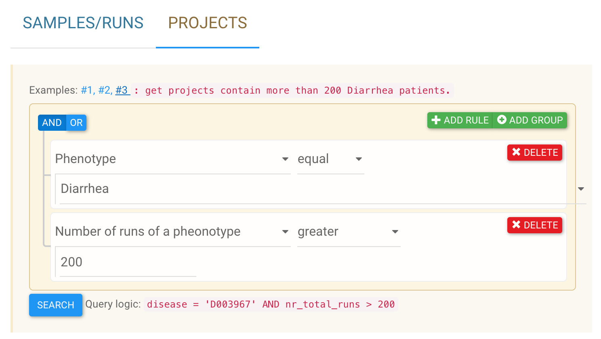

Use the graphic data selector¶
GMrepo is equipped with two graphical data selectors to allow users to quickly build complex queries to find projects and runs of interests; see below:

The selectors are a bit difficult to start with, so we provided six examples. Users can click one of the links Examples: #1, #2, #3 above the selectors to view:
- the purpose of the search, e.g.,
"get runs from healthy people with healthy BMIs", - the selector setup, and
- query logic in SQL command string:
"disease = 'D006262' AND BMI BETWEEN 18.5 AND 24.9".

Build complex queries using the data selector¶
It is very easy to use the data selectors. There are three basic logics to build an efficient query:
- AND,
- OR, and
- GROUP to modify the orders of the logics.
For example, to search for samples that were taken from healthy individuals that are either American or British, we need to:
-
a. first build a group logic using the
ADD GROUPbutton that defines the target population; -
b. then add two rules using the
ADD RULEbutton that setCountrytoUnited States of AmericaORUnited Kingdom;- note the logic between two rules on the
CountryisOR!
- note the logic between two rules on the
-
c. then add a new rule
paralelleto the above group, and use it to selectPhenotypeasHealth- note the logic between the
Phenotypeand theCountrygroup isAND!.
- note the logic between the
The resulting graphical selector and the query logic are shown below:

Examples¶
get runs with colonic diseases

get runs from American with no recent antibiotic usage

Data selector examples for projects:
get projects contain both CRC patients and healthy controls

get projects contain both Bipolar patients and healthy controls, with no failed runs

get projects contain more than 200 Diarrhea patients

More examples will be added in the future.